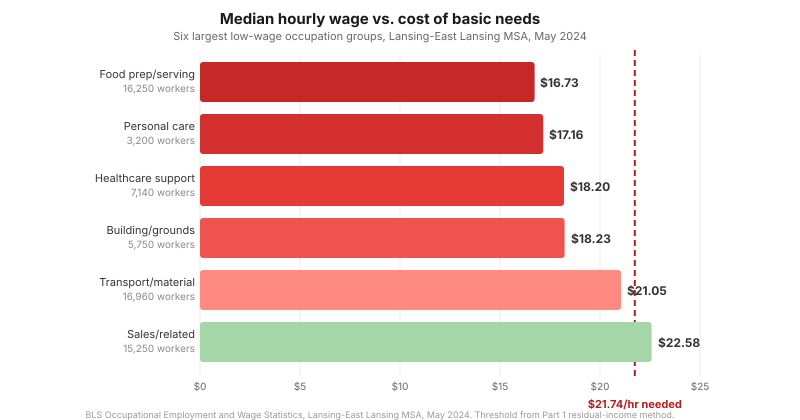

Lansing's Housing Crisis: Wages Fall Short
LANSING, Mich. — Part 1 showed that 70% of Lansing renter households do not earn enough to cover housing and basic needs. Part 2 showed that 40% of homeowner households face the same deficit, compounded by the highest property tax rate in Ingham County. Those posts showed who falls short and by how much, and this post, using only public data, asks why the shortfall exists and what makes it worse.
Key findings
- The two largest low-wage occupation groups in Lansing, food service and personal care, pay $16–17 per hour. A single adult working full time (40 hours per week, 52 weeks) needs $21.74 per hour to cover housing and basic needs using our residual-income method. A food service worker at median wage falls $10,416 per year short of that threshold before considering a family.
- 22,000 Ingham County households had medical debt in collections until the county government itself intervened, committing $250,000 of public funds to buy and forgive that debt in 2024.
- Michigan has the highest auto insurance costs in the nation, adding $900–3,200 per year on top of car payments, fuel, and maintenance for every Lansing household that drives.
- Lansing's electric utility raised rates 7.8% in 2024 and 6.8% in 2025, with water rates rising 9.5% and 9.2% in the same two years.
Wages

The Lansing-East Lansing metro area employs approximately 213,610 workers at an average hourly wage of $30.56, below the national average of $32.66.
Food preparation and serving workers, 16,250 of them in the Lansing metro, earn a median of $16.73 per hour. At full time, that is $34,798 per year. Part 1 showed that a single adult in Lansing needs $45,214 to cover housing and basic needs using the residual-income method. A food service worker at median wage falls $10,416 per year short of that threshold, and for a single parent with one child the threshold rises to $75,916, widening the gap to $41,118. The 3,200 personal care and service workers in the metro, at a median of $17.16 per hour, face a gap of $9,521 per year by the same measure.
They are not alone. Transportation and material moving employs another 16,960 workers in the metro area, sales and related accounts for 15,250, building and grounds cleaning for 5,750, and healthcare support for 7,140. Together with food service and personal care, these six groups represent roughly 65,000 workers, nearly a third of local employment. Four of the six pay median wages below the $21.74 per hour a single adult needs; transportation sits just under it at $21.05, and only sales clears it at $22.58, barely above the line and well below what any household with children requires.
Debt
In 2024, the Ingham County Board of Commissioners voted to spend $250,000 of public money to buy and erase the medical debt of 22,000 Ingham County households. State matching funds brought the total to $500,000. The county partnered with the nonprofit RIP Medical Debt, which estimated that 1.3 million Michigan residents carried medical debt at the start of 2022, totaling $181 million statewide.
For households already running a monthly deficit, any unexpected cost becomes debt, and the debt carries interest that makes the next month's deficit larger. In Lansing, property tax delinquency is a particular risk: Part 2 showed that homeowners pay 62.6 mills, the highest rate in Ingham County. A homeowner who falls behind on a $4,229 annual tax bill faces 18% interest and a 3% late fee. In December 2024, 954 Ingham County properties were at risk of foreclosure, down from more than 1,300 per year during 2011–2016 but still resulting in 50 to 60 actual foreclosures per year.
Auto insurance
Michigan has the highest auto insurance costs in the nation. The state's no-fault insurance law drove premiums far above the national average for decades, and a 2019 reform that allowed drivers to choose lower coverage has not closed the gap: Michigan drivers still pay an average of $3,204 per year for full coverage and $900 per year for minimum coverage.
Michigan requires proof of insurance to register a vehicle. Census data shows that 90% of Lansing workers commute by car.
Utilities
The Lansing Board of Water and Light raised residential electric rates 7.8% effective October 1, 2024, adding $7.02 per month for a household using 500 kWh, with a second increase of 6.8% following in October 2025. Water rates rose 9.5% and 9.2% over the same two years. Combined with natural gas and sewer, utility costs rise on a schedule that has no relationship to wage growth in the occupations described above.
A food service worker's month
A food service worker earning $16.73 per hour grosses $2,899 per month. After federal, state, city, and payroll taxes, take-home is approximately $2,425. From that: $884 in rent (Lansing median for a one-bedroom), $75 in auto insurance at the state minimum, electric and water from BWL, natural gas, food, and medical. There is no margin before considering a family.
Related
- Health outcomes by neighborhood: CDC PLACES tract-level data for Lansing shows wide variation in health outcomes by census tract.
- Food access: The USDA Food Access Research Atlas maps low-income, low-access areas in Lansing where households in deficit face the longest trips to a grocery store.
- Generational wealth erosion: Part 2's assessment regressivity finding (low-value homes assessed at 188% of sale price) compounds over time.
- Transit gaps: The $12,911 annual transportation cost in the residual-income model reflects car dependence across Lansing's census tracts.
Sources
BLS Occupational Employment and Wage Statistics (Lansing-East Lansing MSA, May 2024). WILX (March 13, 2024, Ingham County medical debt; RIP Medical Debt statewide figures). The Zebra (Michigan auto insurance trends). Bankrate (Michigan auto insurance costs, 2024 rates). Lansing Board of Water and Light (August 27, 2024, rate increase). City Pulse (December 18, 2024, tax delinquency). Residual-income methodology and composition thresholds from Part 1 and Part 2.